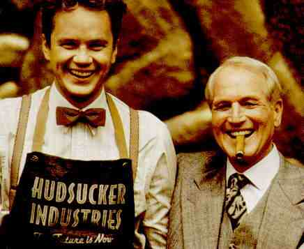

| Hudsucker
Proxy B+,B+ |
| Warner/1994/111m/ANA
1.85 |
The
Hudsucker Proxy
is wildly entertaining. It may not always work, but it is an
original work of grand comic vision. In its fabulously stylized
look, the "Hud" could have easily erupted into musical
comedy. Two parts Terry Gilliam, one part Preston Sturges, one
part Frank Capra, the Coen brothers have shaken it all together
in an art deco glass frothing over in ebullient chemical
reaction.
The set design of
The Hudsucker Proxy is an
absolute joy and the film would be worth seeing if for no other
reason than to tour the magic frames of celluloid which combine
to make this architectural amalgam. Dynamic camera set-ups and
outstanding special effects contribute to the tantalizing
concoction carefully put together by these filmmakers.
Tim Robbins is the wonderfully goofy
Norville Barnes. Casting Robbins is a stroke of genius. I cannot
think of another actor who could have looked so silly and
sincere at the same time without losing audience credibility.
Barnes' conspiratorial promotion coinciding with the
unpredictable down fall (sic) of Waring Hudsucker
is executed in blazing fashion. So breathless is the pace, it is
difficult to enjoy  the
many details surrounding Barnes' world that the filmmakers have
obviously tittered over. Paul Newman brings a generous measure
of unctuousness to his role as Sidney J. Mussburger,
manipulative power behind the throne of Hudsucker.
It's one of Newman's best screen appearances in years and a
daring departure from his previous output. Where The Hudsucker
Proxy falls
glaringly short of cinema perfection is in the performance of
Jennifer Jason Leigh, playing a reporter sniffing out the
suspicious financial shenanigans brewing at Hudsucker
Industries. Leigh chooses to affect an accent crafted after
Katherine Hepburn's madcap comic screen appearances and it
dominates her performance with a long, insufferable, sour note.
That it doesn't totally topple the Hudsucker
tower is a tribute to the overall strength of the material.
While kids might enjoy this
delightful fantasy from the Coen brothers, it is truly a feast
for film lovers and an ode to movie making. The image of the as
yet defined Hula Hoop and the phrase, "You know, for
kids," will always have the ability to bring a smile to my
face.
Warners has delivered The Hudsucker
Proxy with consistently sharp images. Color depth is fine,
though some slight bleeding of reds occurs in a few instances.
The outstanding production design is really showcased by the DVD
format. Shadow details are outstanding and all the delights of
the Hudsucker world are revealed with delight. Contrast has good
pop except for the very opening skyline moments, which seem
slightly over-bright.
|
|

Check out these selections from our DVD
Review Archive. New releases are constantly in our face, but catalog
gems should not be forgotten.

The
Feature
Archive has articles ranging from Akira
Kurosawa to Blonde
Bimbos and John
Ford.
Puttin
on the Ritz

Fred Astaire and Cyd
Charisse
bring Silk Stockings to life, a remake of Ninotchka,
one of many films successfully turned into musicals by the Hollywood
dream factory. Read all about remakes into musicals by clicking on
the divine dancers.

 Gary
Morris's insightful publication Bright Lights Film Journal
turns the celluloid in films from a unique perspective. Click on the image above for more pure movie views. Gary
Morris's insightful publication Bright Lights Film Journal
turns the celluloid in films from a unique perspective. Click on the image above for more pure movie views.
 Sight
and Sound Magazine is the venerable voice of The British Film
Institute. The site includes articles and film reviews. A great
resource in print and on the Internet. Sight
and Sound Magazine is the venerable voice of The British Film
Institute. The site includes articles and film reviews. A great
resource in print and on the Internet.

You won’t want to miss the
online iF Magazine. You may have guessed iF stands for
independent film.
 Frank
Darabont is the cover interview in the current online issue of
Fade-In Magazine. Check it out along with other savvy features of
this excellent book Frank
Darabont is the cover interview in the current online issue of
Fade-In Magazine. Check it out along with other savvy features of
this excellent book
|